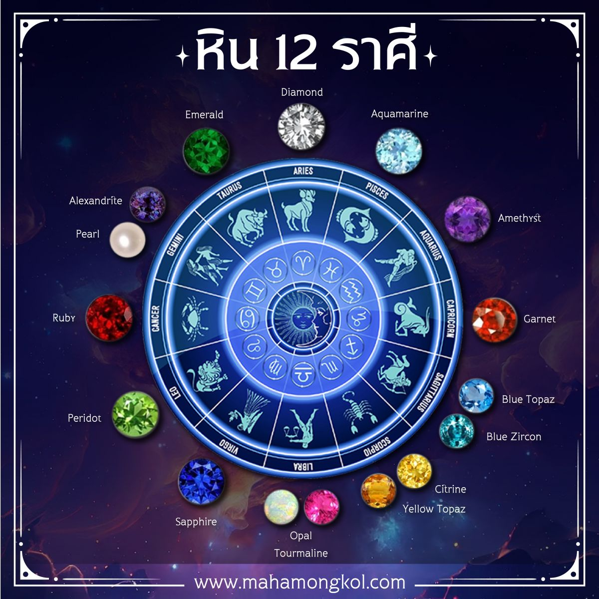

อัญมณีและหินมงคล

ศาสตร์ความเชื่อโบราณที่นำพลังงานธรรมชาติ สัญลักษณ์ สีสัน และแร่ธาตุของอัญมณีชนิดต่างๆ มาเชื่อมโยงกับดวงชะตา พลังงานในร่างกาย และดวงดาวประจำวันเกิดหรือราศีเกิด โดยมีหลักการว่าอัญมณีแต่ละชนิดตกผลึกและสะสมพลังงานจากโลกมาเป็นเวลาหลายล้านปี จึงมีคลื่นความถี่และพลังสั่นสะเทือนเฉพาะตัวที่สามารถช่วยปรับสมดุลพลังงาน เสริมจุดแข็ง ลดจุดอ่อน และดึงดูดสิ่งดีๆ เข้ามาในชีวิตของผู้สวมใส่ โดยการนำอัญมณีและหินมงคลมาใช้ในการดูดวงและเสริมดวงจะแบ่งออกเป็นหลายรูปแบบ เช่น การเลือกอัญมณีตามวันเกิดหรือราศีเกิดเพื่อเสริมโชคลาภ บารมี และความรัก การเลือกตามธาตุประจำตัวตามหลักโหราศาสตร์ การใช้หินมงคลเพื่อเปิดและปรับสมดุลศูนย์พลังงานในร่างกายหรือจักระทั้ง 7 ไปจนถึงการสุ่มหยิบหินมงคลเพื่อทำนายสภาวะอารมณ์และอนาคตคล้ายกับการจับไพ่ ซึ่งอัญมณีและหินมงคลไม่ได้เป็นเพียงเครื่องประดับเพื่อความสวยงามเท่านั้น แต่ยังเป็นที่พึ่งทางใจที่ช่วยเสริมความมั่นใจ เสริมสมาธิ และขจัดพลังงานลบ ให้ผู้สวมใส่มีสติและพลังใจในการดำเนินชีวิตประจำวัน